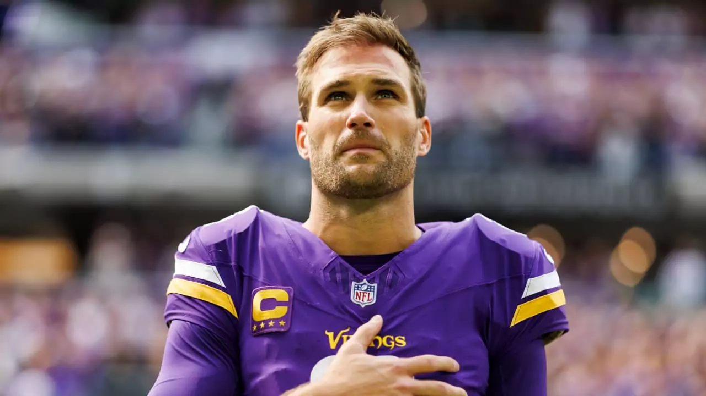
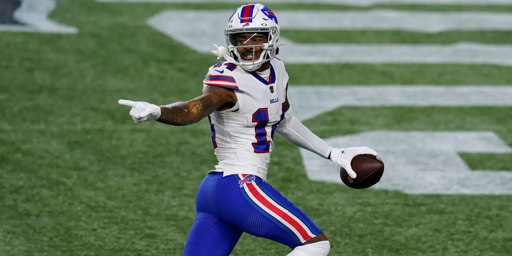

Negociações e Expectativas: Trocas na NFL e Prospectos para o Draft 2024/2025

À medida que a offseason da NFL está em pleno andamento, as trocas entre os times estão agitando o mundo do futebol americano. As franquias estão buscando reforçar seus elencos, reconfigurar estratégias e posicionar-se para o futuro, resultando em uma série de movimentações significativas. Essas transações não apenas influenciam o cenário atual da liga, mas também moldam as expectativas para o draft da temporada 2024/2025.
As negociações entre os times têm sido intensas, com jogadores-chave sendo transferidos em trocas que muitas vezes surpreendem os fãs e analistas. Desde quarterbacks renomados até talentos emergentes, as movimentações têm o potencial de mudar drasticamente o equilíbrio de poder na liga. Essas trocas não apenas refletem a busca incessante por sucesso por parte das equipes, mas também destacam a importância de uma abordagem estratégica e visionária na construção de um elenco competitivo.
Enquanto as trocas agitam a NFL, os olhos dos fãs também estão voltados para o draft, onde a próxima geração de talentos será revelada. Os prospectos para o draft de 2024/2025 estão gerando grande expectativa, com uma safra de jogadores promissores em todas as posições. Dos quarterbacks habilidosos aos defensores dominantes, as equipes têm a oportunidade de encontrar peças-chave para fortalecer seus elencos e garantir o sucesso futuro.
Entre os prospectos mais cobiçados para o draft deste ano, destacam-se aqueles que demonstraram habilidades excepcionais ao longo de suas carreiras universitárias e que têm o potencial de fazer um impacto imediato na NFL. A competição para selecionar esses talentos é acirrada, com as equipes analisando minuciosamente as estatísticas, habilidades técnicas e intangíveis de cada jogador antes de tomar uma decisão.
Além disso, o draft oferece uma oportunidade única para as equipes reforçarem suas necessidades específicas e planejarem para o futuro a longo prazo. Estratégias de draft variam de acordo com as prioridades de cada equipe, desde a busca por um quarterback franquia até o reforço de posições-chave na linha defensiva ou receptores explosivos para o ataque.
À medida que a offseason da NFL avança, as negociações entre os times e as expectativas para o draft continuam a alimentar a paixão dos fãs pelo esporte. Com cada movimento estratégico e cada seleção no draft, as equipes moldam não apenas seu presente, mas também seu futuro na liga. A emoção e a especulação estão no ar, à medida que os torcedores aguardam ansiosamente para ver como suas equipes se posicionam para a temporada 2024/2025 e além.